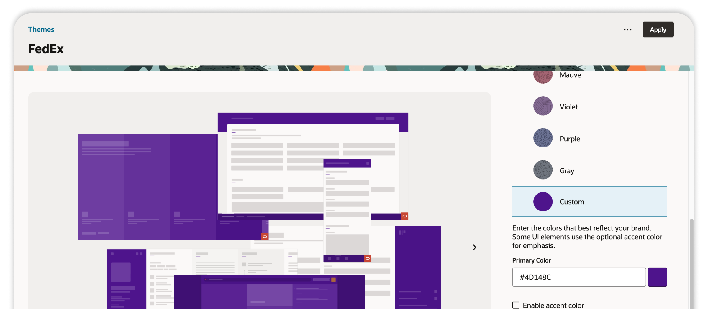

This portfolio is password protected.
Enter the password to continue.
I started my career as a designer, then moved into product. This page covers three pieces of work: a theming system that lets customers bring their own brand colour, a platform where marketing teams create email content, and an AI tool I built to run my own workflow.
Prepared for the Senior Product Manager (Creatives) role at StackAdapt. It is a short summary, and I can go deeper on any of it in conversation.

I led v2 of customer theming for Oracle’s Fusion Applications, moving customers from legacy theming (Classic) to Redwood Custom themes, where a customer’s brand colour is applied automatically across the product. v1 largely didn’t let customers use their brand colour, and some hadn’t moved to it at all because their brand wouldn’t show. The platform serves enterprise and government organizations with tightly controlled brand guidelines and accessibility mandates, so getting it wrong is a customer trust problem as well as a design problem.
To make the idea concrete, I built an interactive prototype where components adapted to a chosen colour based on its lightness. It aligned design, engineering, and leadership on what would change, and prompted revisions to contrast and lightness before release.
The design team hadn’t been able to land on a concrete contrast threshold. Rather than wait, I used Codex to build the analysis myself, sweeping all 16.7 million possible hex values to map which colours pass or fail, then ingesting real customer colour data to classify each account by risk. The critical finding: black or white text as a fallback ensures every customer’s primary colour passes contrast, eliminating critical risk across all customer accounts. The results fed into the prototype.
I kept the work accountable to the existing Redwood component library so the new capability felt native, and wrote guidelines that let internal teams and customers make standards-compliant decisions without routing every configuration back through the design system team.
v2 shipped to a customer base of roughly 7,000. I left Oracle during the rollout, so I don’t have adoption numbers to share.
Dyspatch is an email template platform used by marketing teams. I joined as a product designer and product manager, and became Director of Product.
I owned strategy for the self-serve tier and the developer-facing API, which opened the platform to new customer segments.
I designed a localization workflow so teams could manage multi-language templates at scale, and built integrations with third-party translation services to fit the content pipeline.
I built and led a four-person product team with zero attrition and two internal promotions.
Harbour is a local web app I built with Codex and Python. It turns meeting transcripts into notes and to-dos, and fills a kanban board automatically. It also has a notes section for my own meeting and 1:1 notes.
It checks Outlook on a schedule for transcript emails, and falls back to my recordings folder. When there is a recording but no transcript, or the emailed transcript is thin, it runs Whisper to fill the gap.
I used it daily for about six months across 100 to 200 meetings. Post-meeting notes and to-dos went from about 10 minutes to about 2, and I shared it with teammates.
Harbour is an internal tool and the code stayed with Oracle, so I'm describing it here instead of showing it.